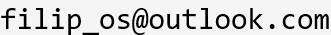

Filippos Filippitzis
Lecturer in the University of Western Macedonia, Dept. of Mechanical Engineering, Greece
- Kozani, Greece
 Github
Github


About me
Welcome!
My name is Filippos Filippitzis. I received my PhD in Mechanical Engineering from Caltech in 2020. My areas of specialization are Structural Health Monitoring; damage identification, and earthquake ground motion response. My advisors at Caltech were Professors Thomas Heaton and Monica Kohler. Professors Domniki Asimaki and Robert Clayton were on my committee.
My Ph.D. research is focused in the area of structural health monitoring. I have developed a structural damage identification methodology and software based on sparse Bayesian learning. The method integrates information from nonlinear FEM models with information contained in dense seismic array measurements and allows detection, localization, and quantification of damage in a structure following a potentially damaging event.
As a member of Caltech's Community Seismic Network (CSN), my work also involves data processing, analysis, and visualization of earthquake events recorded in the Los Angeles area. The collected data is used in order to study the ground-motion response in urban Los Angeles, as well as for evaluating the predictive capabilities of 3D finite difference simulations and ground motion prediction equations.
Recent projects and teaching are presented in more detail at the /Research page.
For a summary of my past studies and work, you can find my CV here.